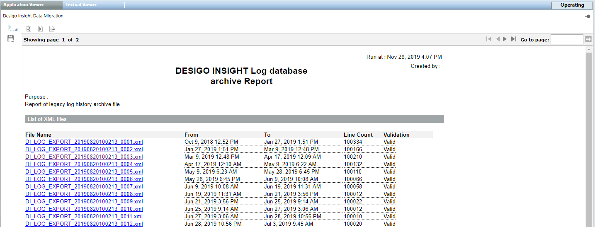
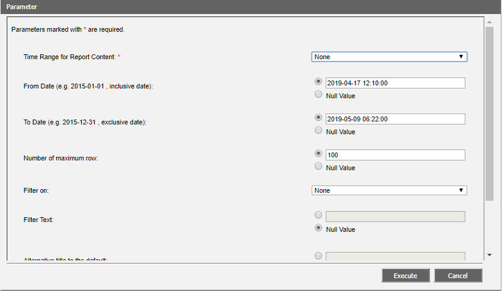
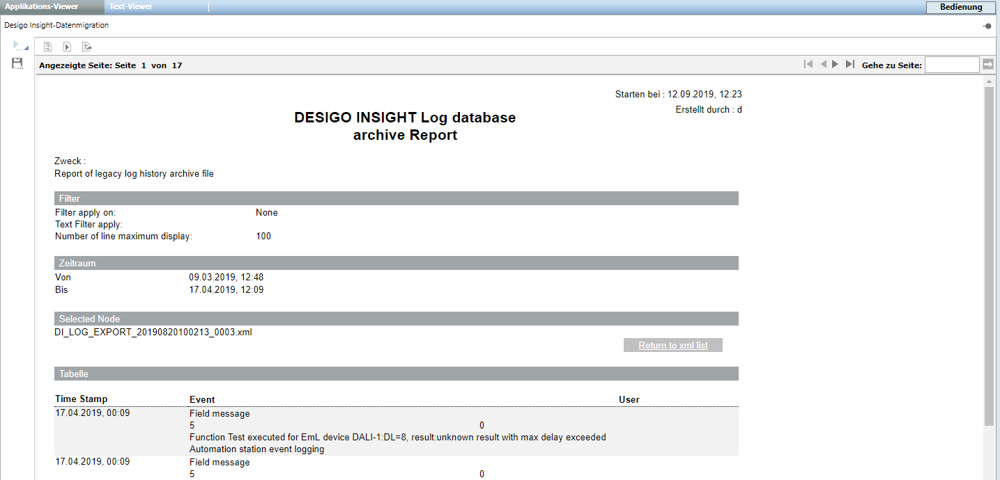
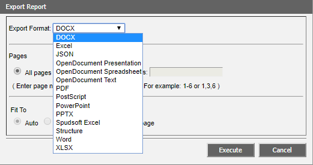

Display Desigo Insight Log Data
- The System Browser is in Operating mode.
- In System Browser, select Application View.
- Select Applications > Log Viewer.
- The Application Viewer tab opens.
NOTE: If a file is displayed asInvalidin the Validation column, it is manually changed after the fact and the checksum is thus false.
- Select the export file from the applicable section List of log files or List of audit files that matches the desired date range.
- The Parameter dialog box opens.

- Define:
- In the drop-down list Time range for report content, selection option None (default setting for Desigo Insight Migration).
- In the From date field, you can limit the start date of the desired file.
- In the To date field, you can limit the end date of the desired file.
- In the Number of maximum rows field, the number of report lines to be created or select option No value (= all lines).
- Click Execute.
- The report is generated and is displayed as a preview.

- (Optional) Click Back to xml list, if you want to execute another report.
- Click Export report
 and select the output format.
and select the output format.
- Click Execute.